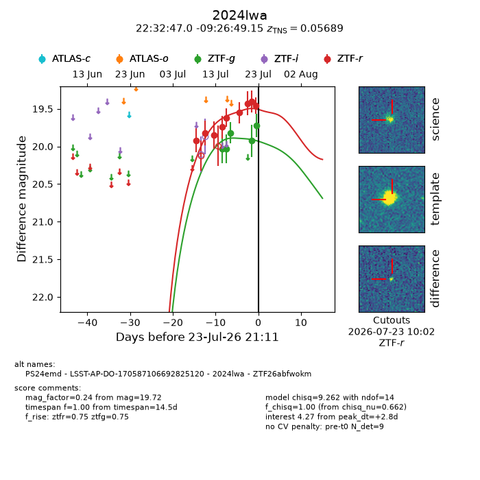
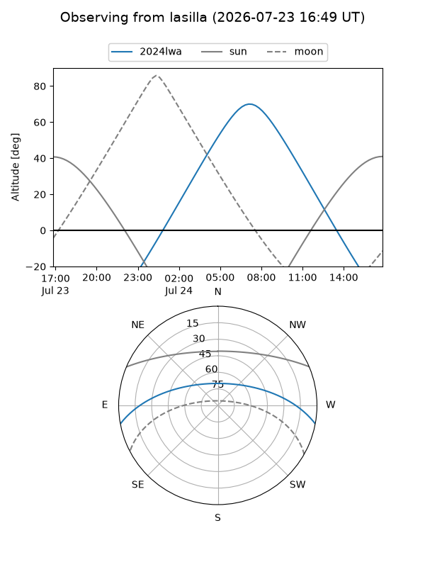
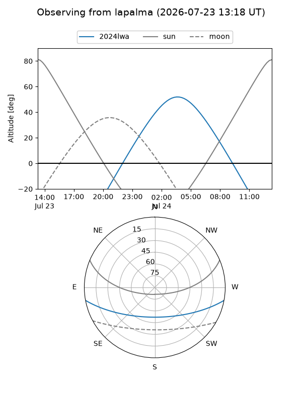
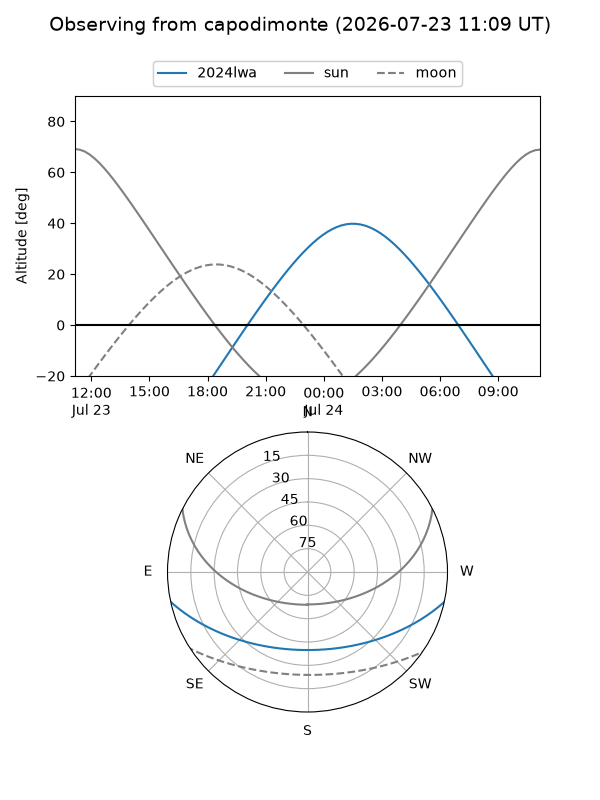
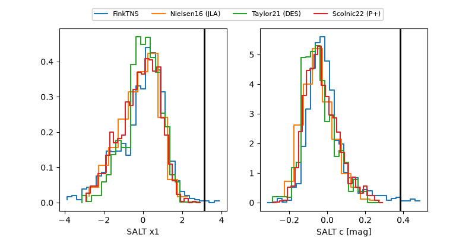

2024lwa
Target 2024lwa at 2026-07-23 21:14
Aliases and brokers:
FINK-ZTF: ztf.fink-portal.org/ZTF26abfwokm
Lasair-ZTF: lasair-ztf.lsst.ac.uk/objects/ZTF26abfwokm
ALeRCE-ZTF: alerce.online/object/ZTF26abfwokm
YSE-PZ: ziggy.ucolick.org/yse/transient_detail/2024lwa
TNS name: wis-tns.org/object/2024lwa
Direct TNS query: direct search
alt names
ZTF26abfwokm (ztf,fink_ztf)
2024lwa (tns,yse)
PS24emd (panstarrs)
LSST-AP-DO-170587106692825120 (iau_lsst)
Coordinates:
equatorial (ra, dec) = 338.1960,-9.44699
equatorial (HMS+DMS) = 22:32:47.04,-09:26:49.15
galactic (l, b) = (54.6865,-52.83855)
Flags:
TNS type: SN II
TNS redshift: 0.0569
peak dt: +2.8
Photometry:
last ztfg=19.72, ztfr=19.46
5 ztfg, 9 ztfr detections
Lightcurve

Visibility



Additional plots
